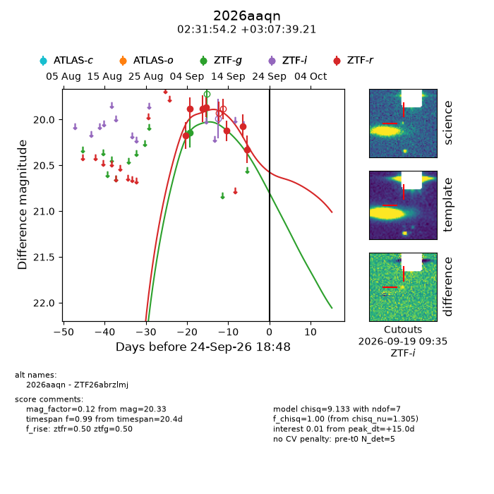
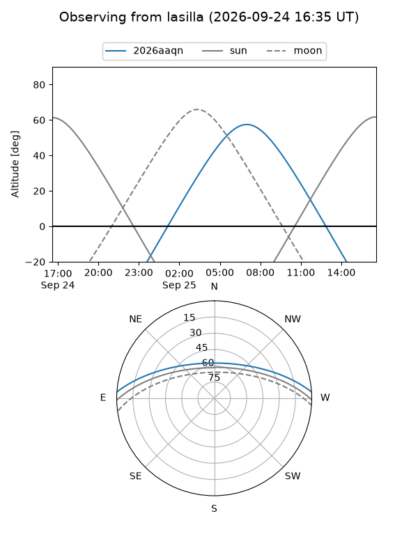
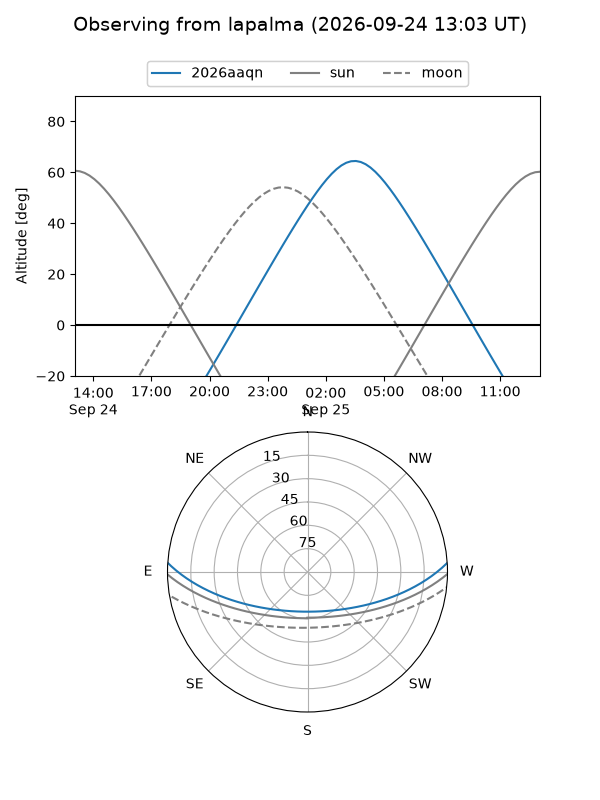
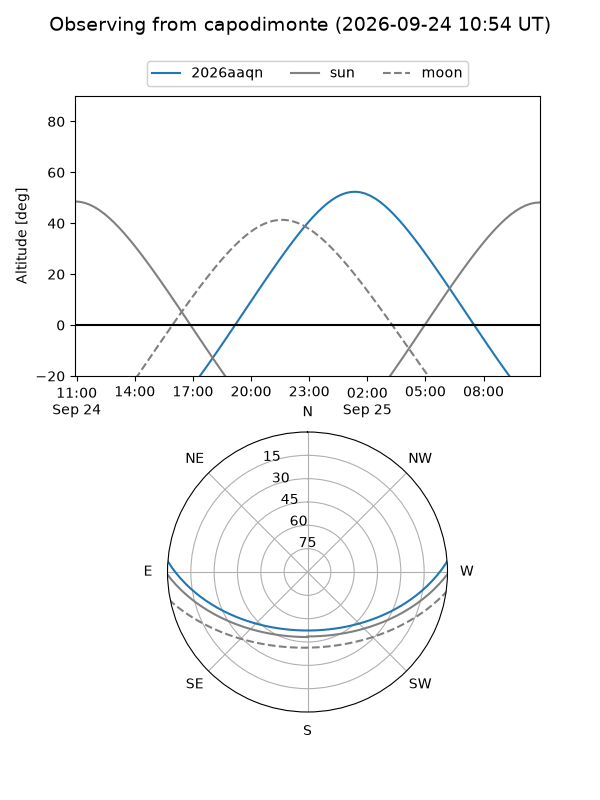
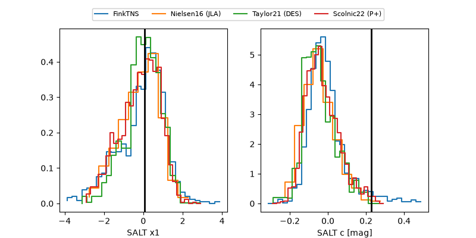

2026aaqn
Target 2026aaqn at 2026-09-24 18:55
Aliases and brokers:
FINK-ZTF: ztf.fink-portal.org/ZTF26abrzlmj
Lasair-ZTF: lasair-ztf.lsst.ac.uk/objects/ZTF26abrzlmj
ALeRCE-ZTF: alerce.online/object/ZTF26abrzlmj
YSE-PZ: ziggy.ucolick.org/yse/transient_detail/2026aaqn
TNS name: wis-tns.org/object/2026aaqn
Direct TNS query: direct search
alt names
ZTF26abrzlmj (ztf,fink_ztf)
2026aaqn (tns,yse)
Coordinates:
equatorial (ra, dec) = 37.9757,+3.12756
equatorial (HMS+DMS) = 02:31:54.16,+03:07:39.21
galactic (l, b) = (165.5376,-51.23865)
Flags:
TNS type: nan
peak dt: +15.0
Photometry:
last ztfg=20.14, ztfr=20.33
1 ztfg, 7 ztfr detections
Lightcurve

Visibility



Additional plots
